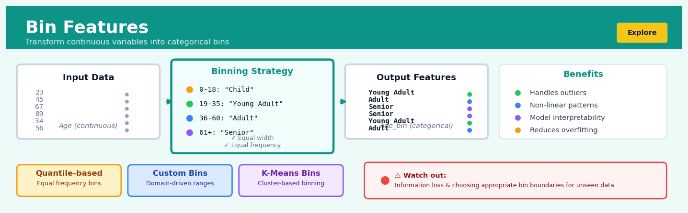

Bin Features#


The most common mistake with bin features is choosing bin boundaries based purely on training data distribution without considering domain knowledge or validation set behavior. Your bins should be stable and meaningful across deployments, so always use domain-informed thresholds when possible and be extremely careful with quantile-based binning on skewed distributions. Remember that every binning decision is a trade-off between reducing noise and losing granular information, so validate that the performance gain justifies the information loss.
The 60-Second Version#
What it does: Bin Features converts precise numbers into meaningful groups—like turning exact ages (23, 47, 68) into life stages (young adult, middle-aged, senior).
When to use it: When your business problem cares more about “high versus low” or “which range” than the exact number, or when you suspect the relationship isn’t a straight line (e.g., spending patterns differ between income brackets, not proportionally with every dollar earned).
What you get back: Your continuous column becomes categories you can compare, visualize, and explain to stakeholders without statistical training—“customers in the $50-100K bracket behave differently” rather than “each additional dollar correlates with 0.003% change.”
Difficulty |
Easy |
Typical runtime |
Seconds on 100K rows |
What you bring |
A numerical column you want to group |
What you get |
Categorical bins (labels or ranges) |
Heuristix bucket |
Explore — Shaping & Transforming Data |
You’re making an irreversible choice about where to draw the lines—bad bin boundaries can hide important patterns or create misleading ones.
Learning Objectives#
After reading this chapter, a business user will be able to:
Identify situations where continuous variables (like age, income, or transaction amounts) should be grouped into ranges to reveal clearer patterns in business data.
Interpret binned variable outputs by explaining what each interval represents and how bin boundaries were chosen when presenting insights to stakeholders.
Decide whether to recommend binning for a specific analysis by weighing the trade-off between model interpretability and loss of granular information.
After reading this chapter, a data scientist will be able to:
Implement equal-width, equal-frequency, and custom binning strategies in Python while correctly handling edge cases like outliers, missing values, and boundary observations.
Select optimal bin counts and boundaries by evaluating the impact on model performance, information loss, and the risk of overfitting versus oversimplification.
Diagnose binning failures such as bins with too few observations, arbitrary boundary effects, or loss of predictive signal by examining bin distributions and target variable statistics across intervals.
Overview#
Bin Features (also known as discretisation or binning) is a feature engineering technique that transforms continuous numerical variables into discrete categorical intervals or “bins.” The core purpose is to convert a variable with infinite possible values into a finite set of ordered groups, enabling models to capture non-linear relationships, reducing sensitivity to outliers, and improving interpretability. Binning belongs to the family of univariate feature transformation methods and serves as a bridge between continuous and categorical representations of numerical data.
When to Use This#
Use this when:
The relationship between a predictor and target is non-linear or step-wise — For example, insurance risk may jump at specific age thresholds (25, 65) rather than changing smoothly, and binning captures these natural breakpoints.
You need to reduce the impact of outliers without removing data — Extreme values that would otherwise dominate linear models get absorbed into boundary bins, preserving information while limiting distortion.
Business rules or regulations require discrete categories — Credit scoring models often need to report risk grades (A, B, C, D) rather than continuous scores for regulatory compliance or customer communication.
You are working with tree-based models and want to pre-discretise for speed — While trees naturally find splits, pre-binning can reduce computation on very large datasets.
The underlying data has natural groupings that domain experts recognise — Age groups (child, adult, senior), income brackets, or temperature ranges often have meaningful business interpretations.
You want to create interaction features between continuous variables — Binned versions of two continuous variables can be crossed to create interpretable interaction terms.
Missing values need to be handled as a separate category — Binning allows you to treat missingness as an explicit group rather than imputing.
Do NOT use this when:
The relationship is genuinely linear — Binning a variable with a smooth linear relationship to the target destroys information and reduces predictive power.
Sample size is small relative to the number of bins — With limited data, bins will have unstable estimates and the discretisation will overfit to noise.
You need to make predictions outside the training data range — Binned features cannot extrapolate; new values beyond training bounds default to edge bins.
Questions This Answers#
Understanding Customer Behavior Patterns#
Why do customers who spend between \(50-\)100 behave so differently from those spending \(101-\)150, even though they seem similar?
At what income level do customers start buying premium products instead of our standard line?
Is there a specific age range where customer churn spikes, and how should we segment our retention campaigns?
Which credit score brackets should we approve for loans versus which ones are too risky?
Are customers who visit our store 2-3 times per month really that different from those who visit 4-5 times?
Simplifying Complex Pricing and Risk Decisions#
How should we tier our pricing—where are the natural breakpoints where customers change their purchase behavior?
What mileage ranges should we use to price our used car inventory so we’re competitive but not leaving money on the table?
Should we treat all late payers the same, or are customers 1-15 days late fundamentally different from those 16-30 days late?
At what transaction size should we flag purchases for fraud review—\(500, \)1,000, or somewhere else?
Which property value ranges need different insurance premiums, and where should we draw those lines?
Targeting and Segmentation Strategy#
How many customer segments should we actually have based on purchase history—are we over-complicating this with too many micro-segments?
What temperature ranges drive beverage sales, and should we stock differently for 70-80°F versus 80-90°F days?
Should our marketing treat all millennials the same, or are there meaningful sub-groups by age within that generation?
Which sales volume tiers should qualify for different commission rates to motivate our team effectively?
How It Works#
Imagine you’re a teacher grading 150 student essays, each scored precisely between 0 and 100 points. Instead of reporting every granular score (82.3, 67.8, 91.2), you group them into letter grades: F (0-59), D (60-69), C (70-79), B (80-89), and A (90-100). Suddenly, the scores become easier to communicate, patterns emerge more clearly (most students are B or C), and small differences that might just be random noise (like the difference between 82.3 and 82.8) stop mattering. You’ve just performed binning—transforming continuous scores into meaningful categories that capture the essential structure without the overwhelming detail.
CONTINUOUS DATA (Income) BINNED DATA
$23,450 ──┐ ┌─────────────────┐
$31,200 ──┼─→ Bin 1: Low │ Bin 1: Low │
$28,900 ──┘ ($20K-$40K) │ [3 records] │
└─────────────────┘
$45,300 ──┐ ┌─────────────────┐
$52,100 ──┼─→ Bin 2: Medium │ Bin 2: Medium │
$48,750 ──┘ ($40K-$60K) │ [3 records] │
└─────────────────┘
$67,800 ──┐ ┌─────────────────┐
$71,200 ──┼─→ Bin 3: High │ Bin 3: High │
$69,500 ──┘ ($60K-$80K) │ [3 records] │
└─────────────────┘
Infinite precision → Finite categories
Step 1: Examine the range Start by looking at your continuous variable and identifying its minimum and maximum values. If you’re working with ages, you might see values ranging from 18 to 87. This establishes the full spectrum you need to divide into bins.
Step 2: Decide on the boundaries Choose where to draw the lines between bins. You can use equal-width intervals (like cutting a ruler into same-sized pieces: 18-35, 36-53, 54-71, 72-87), equal-frequency intervals (ensuring each bin contains roughly the same number of records), or custom boundaries based on domain knowledge (like age groups: young adults, middle-aged, seniors).
Step 3: Assign each value to its bin Go through every single data point and determine which bin it falls into based on your boundaries. An age of 42 would land in the 36-53 bin using our equal-width example. This is straightforward comparison—is the value greater than the lower boundary and less than or equal to the upper boundary?
Step 4: Label the bins Replace the original continuous values with their bin labels. You can use numbers (Bin 1, Bin 2, Bin 3), descriptive names (Low, Medium, High), or keep the interval notation (18-35, 36-53). The original age of 42 now becomes “36-53” or “Bin 2” or “Middle-aged”—whatever labeling scheme you chose.
Step 5: Use the transformed feature Feed these categorical bin labels into your model instead of the raw continuous values. The model now learns patterns based on which bin a record belongs to, rather than trying to process every tiny numerical difference.
The key insight: Binning works because many real-world relationships are non-linear and threshold-based—what matters isn’t whether someone earns \(47,000 versus \)48,000, but whether they’re in the “middle income” category versus “high income,” creating natural breakpoints that models can exploit more easily than raw numbers.
The Intuition#
Imagine you are a doctor assessing cardiovascular risk. You could use a patient’s exact cholesterol level—say, 217 mg/dL—but in practice, you think in categories: “normal,” “borderline high,” and “high.” This categorical thinking is not laziness; it reflects genuine medical knowledge that risk does not increase smoothly with cholesterol. Below 200, risk is relatively flat. Between 200 and 239, it rises moderately. Above 240, it jumps significantly. The exact difference between 217 and 218 is clinically meaningless, but the difference between 199 and 240 is substantial. Binning formalises this intuition.
Consider another analogy: a staircase versus a ramp. A continuous variable is like a ramp—every tiny step forward changes your height. A binned variable is like a staircase—you stay at one level until you cross a threshold, then jump to the next. Many real-world phenomena behave more like staircases than ramps. Tax brackets, insurance premiums, shipping rates, and medical diagnoses all have threshold effects. When your data exhibits this staircase behaviour, forcing a model to fit a ramp (linear relationship) wastes capacity trying to approximate something that is fundamentally discrete.
The art of binning lies in choosing where to place the stair edges—the bin boundaries. Place them poorly, and you either create artificial distinctions (splitting similar values) or mask real ones (combining different values). Place them well, and you reveal the true structure of your data. This is why binning methods range from simple (equal-width, equal-frequency) to sophisticated (optimal binning that maximises information value or minimises entropy). The choice of method depends on whether you prioritise simplicity, interpretability, or predictive power.
The Mathematics#
Problem Setup and Notation#
Let \(X\) be a continuous random variable with observed values \(\{x_1, x_2, \ldots, x_n\}\) where \(x_i \in \mathbb{R}\). The goal of binning is to define a transformation \(B: \mathbb{R} \rightarrow \{1, 2, \ldots, K\}\) that maps each continuous value to one of \(K\) discrete bins.
We define bin boundaries as an ordered sequence:
The binning function assigns each observation to bin \(k\) according to:
The resulting binned variable \(\tilde{X}\) takes values in \(\{1, 2, \ldots, K\}\). We denote the count of observations in bin \(k\) as \(n_k = |\{i : B(x_i) = k\}|\), with \(\sum_{k=1}^{K} n_k = n\).
Equal-Width Binning#
The simplest approach divides the observed range into \(K\) intervals of equal width:
Assumptions: This method assumes the variable’s range is finite and meaningful. It performs poorly when the distribution is highly skewed, as most observations may fall into a single bin.
Equal-Frequency (Quantile) Binning#
This method chooses boundaries such that each bin contains approximately the same number of observations. The boundaries are set at empirical quantiles:
where \(F_n^{-1}\) is the empirical quantile function (inverse of the empirical CDF).
Assumptions: Requires that the data have sufficient unique values. When ties exist at quantile boundaries, bins may have unequal frequencies.
Supervised Binning: Entropy-Based Discretisation#
When a target variable \(Y\) is available, we can choose boundaries that maximise the predictive relationship. For a binary target \(Y \in \{0, 1\}\), we use entropy to measure the purity of bins.
The entropy of bin \(k\) is:
where \(p_k = \frac{n_k^{(1)}}{n_k}\) is the proportion of positive cases in bin \(k\), and \(n_k^{(1)}\) is the count of positive cases.
The weighted average entropy after binning is:
The information gain from binning is:
where \(H(Y) = -\bar{p} \log_2(\bar{p}) - (1-\bar{p}) \log_2(1-\bar{p})\) is the entropy of the target before binning, with \(\bar{p}\) being the overall positive rate.
Minimum Description Length Principle (MDLP): Fayyad and Irani (1993) proposed a stopping criterion based on MDL. A split at boundary \(b\) is accepted only if:
where:
Here, \(k\) is the number of distinct classes, and \(k_L\), \(k_R\) are the number of classes present in the left and right partitions respectively.
Optimal Binning: Weight of Evidence and Information Value#
In credit risk modelling, optimal binning maximises the Information Value (IV), a measure of predictive power.
The Weight of Evidence (WoE) for bin \(k\) is:
where \(n^{(1)}\) and \(n^{(0)}\) are the total counts of positive and negative cases, and \(n_k^{(1)}\), \(n_k^{(0)}\) are the counts within bin \(k\).
The Information Value is:
Expanding:
Optimisation: Finding the optimal set of boundaries to maximise IV is a combinatorial problem. Dynamic programming can solve this exactly in \(O(n^2 K)\) time, or heuristic methods (greedy merging, genetic algorithms) provide approximate solutions.
Edge Cases and Degenerate Conditions#
Empty bins: If \(n_k = 0\), the bin contributes no information. In WoE calculations, this causes division by zero; a small smoothing constant (Laplace smoothing) is typically added: \(n_k \leftarrow n_k + \epsilon\).
Single-value bins: When a bin contains only one class (\(p_k = 0\) or \(p_k = 1\)), entropy is zero but WoE is undefined (\(\pm\infty\)). Smoothing or bin merging resolves this.
Monotonicity constraints: Some applications require that WoE values be monotonic across bins. This is enforced via constrained optimisation or post-hoc bin merging.
Relationship to Other Methods#
Decision tree splits: A single decision tree split on a continuous variable is equivalent to 2-bin discretisation. The full tree performs recursive multi-bin discretisation.
Isotonic regression: Both methods produce step functions, but isotonic regression optimises for prediction error rather than information-theoretic criteria.
Spline regression: Binning is a special case of basis expansion using indicator functions; splines use smoother basis functions.
Understanding the Mathematics#
Understanding the Mathematics#
Equal-Width Binning#
The equation:
Read it aloud:
“The width equals the maximum value minus the minimum value, divided by the number of bins. Each bin starts at the minimum value plus the width times one less than the bin number, and extends up to (but doesn’t include) the minimum value plus the width times the bin number.”
What each symbol means:
\(w\) = the width of each bin (how much range each interval covers)
\(x_{max}\) = the largest value in your dataset
\(x_{min}\) = the smallest value in your dataset
\(k\) = the number of bins you want to create
\(\text{bin}_i\) = the \(i\)-th bin interval
\([a, b)\) = includes \(a\) but excludes \(b\) (left-closed, right-open interval)
A concrete numerical example:
You have customer ages ranging from 18 to 78 years old, and you want 5 bins. First, calculate the width: \(w = \frac{78 - 18}{5} = \frac{60}{5} = 12\) years per bin. Now create the bins: Bin 1 is [18, 30), Bin 2 is [30, 42), Bin 3 is [42, 54), Bin 4 is [54, 66), Bin 5 is [66, 78]. A customer aged 35 falls into Bin 2, while someone aged 70 lands in Bin 5.
Why this equation matters:
Equal-width binning ensures every interval spans the same range, making the bins easy to interpret and communicate to stakeholders who need consistent, uniform categories.
Equal-Frequency Binning (Quantiles)#
The equation:
where \(p \in \{0, \frac{1}{k}, \frac{2}{k}, ..., 1\}\)
Read it aloud:
“The quantile at probability p equals the smallest value x where the cumulative distribution function reaches or exceeds p. We calculate this at evenly-spaced probabilities from zero to one, dividing by the number of bins.”
What each symbol means:
\(Q(p)\) = the quantile value at probability level \(p\)
\(p\) = the proportion of data below this cut-point (between 0 and 1)
\(\inf\) = infimum, the smallest value satisfying the condition
\(F(x)\) = cumulative distribution function, the proportion of data ≤ \(x\)
\(k\) = number of bins to create
A concrete numerical example:
You have 1,000 customer transaction amounts and want 4 bins (quartiles). Sort all values and find cut-points at \(p = 0.25, 0.50, 0.75\). If your data shows \(Q(0.25) = \$45\), \(Q(0.50) = \$120\), \(Q(0.75) = \$340\), then: Bin 1 contains 250 transactions from $0–$45, Bin 2 has 250 transactions from $45–$120, Bin 3 holds 250 from $120–$340, and Bin 4 contains 250 transactions above $340. Each bin has exactly 250 customers.
Why this equation matters:
Quantile binning prevents skewed distributions from creating bins with wildly different data counts, ensuring each category has enough samples for statistical reliability and balanced model training.
Custom Threshold Binning#
The equation:
Read it aloud:
“The bin assignment for value x equals 1 if x is below the first threshold, equals 2 if x is between the first and second thresholds, and so on, with the final bin containing all values at or above the last threshold.”
What each symbol means:
\(\text{bin}(x)\) = which bin the value \(x\) gets assigned to
\(x\) = the continuous value being binned
\(t_1, t_2, ..., t_{k-1}\) = custom threshold values (you define these)
\(k\) = total number of bins
A concrete numerical example:
You’re binning credit scores using industry-standard thresholds: \(t_1 = 580\) (poor/fair boundary), \(t_2 = 670\) (fair/good), \(t_3 = 740\) (good/excellent). A customer with score 625 gets \(\text{bin}(625) = 2\) (Fair) because \(580 \leq 625 < 670\). A score of 760 gets \(\text{bin}(760) = 4\) (Excellent) because \(760 \geq 740\).
Why this equation matters:
Domain expertise often reveals meaningful natural boundaries—ignoring them in favor of purely statistical binning sacrifices interpretability and stakeholder trust in favor of mathematical convenience.
The Big Picture#
The mathematics of binning solves a fundamental transformation problem: converting infinite precision into finite categories while preserving information that matters. Equal-width binning prioritizes geometric uniformity, equal-frequency targets statistical balance, and custom thresholds honor domain knowledge. We need different mathematical approaches because data distributions vary wildly—uniform spacing fails with skewed data, quantiles obscure natural boundaries, and domain cutoffs might create imbalanced bins. The mathematical essence is simple: we’re drawing strategic lines through continuous space to create meaningful regions where “close enough” truly is close enough.
Python Implementation#
import numpy as np
import pandas as pd
from sklearn.preprocessing import KBinsDiscretizer
from sklearn.datasets import make_classification
from scipy.stats import entropy
import warnings
warnings.filterwarnings('ignore')
# Generate synthetic data with non-linear relationship
np.random.seed(42)
n_samples = 5000
# Create a continuous feature
income = np.random.lognormal(mean=10.5, sigma=0.8, size=n_samples)
# Create binary target with step-wise relationship to income
# Risk is low below 30k, medium 30-80k, high above 80k
prob_default = np.where(income < 30000, 0.05,
np.where(income < 80000, 0.15, 0.35))
default = np.random.binomial(1, prob_default)
df = pd.DataFrame({'income': income, 'default': default})
print("Dataset shape:", df.shape)
print(f"Default rate: {default.mean():.2%}")
print(f"Income range: ${income.min():,.0f} to ${income.max():,.0f}\n")
# === Method 1: Equal-Width Binning ===
print("=" * 60)
print("METHOD 1: EQUAL-WIDTH BINNING")
print("=" * 60)
# Using sklearn KBinsDiscretizer
equal_width = KBinsDiscretizer(n_bins=5, encode='ordinal', strategy='uniform')
df['income_ew'] = equal_width.fit_transform(df[['income']])
# Display bin edges
edges = equal_width.bin_edges_[0]
print(f"\nBin edges: {[f'${e:,.0f}' for e in edges]}")
# Analyse bins
ew_summary = df.groupby('income_ew').agg(
count=('income', 'count'),
min_income=('income', 'min'),
max_income=('income', 'max'),
default_rate=('default', 'mean')
).round(4)
print("\nEqual-Width Bin Summary:")
print(ew_summary.to_string())
# === Method 2: Equal-Frequency (Quantile) Binning ===
print("\n" + "=" * 60)
print("METHOD 2: EQUAL-FREQUENCY (QUANTILE) BINNING")
print("=" * 60)
equal_freq = KBinsDiscretizer(n_bins=5, encode='ordinal', strategy='quantile')
df['income_ef'] = equal_freq.fit_transform(df[['income']])
edges_ef = equal_freq.bin_edges_[0]
print(f"\nBin edges: {[f'${e:,.0f}' for e in edges_ef]}")
ef_summary = df.groupby('income_ef').agg(
count=('income', 'count'),
min_income=('income', 'min'),
max_income=('income', 'max'),
default_rate=('default', 'mean')
).round(4)
print("\nEqual-Frequency Bin Summary:")
print(ef_summary.to_string())
# === Method 3: Custom Business-Driven Bins ===
print("\n" + "=" * 60)
print("METHOD 3: CUSTOM BUSINESS-DRIVEN BINS")
print("=" * 60)
# Define bins based on domain knowledge
custom_bins = [0, 30000, 50000, 80000, 120000, np.inf]
custom_labels = ['<30k', '30-50k', '50-80k', '80-120k', '>120k']
df['income_custom'] = pd.cut(df['income'], bins=custom_bins, labels=custom_labels)
custom_summary = df.groupby('income_custom', observed=True).agg(
count=('income', 'count'),
min_income=('income', 'min'),
max_income=('income', 'max'),
default_rate=('default', 'mean')
).round(4)
print("\nCustom Bin Summary:")
print(custom_summary.to_string())
# === Method 4: Weight of Evidence Calculation ===
print("\n" + "=" * 60)
print("METHOD 4: WEIGHT OF EVIDENCE & INFORMATION VALUE")
print("=" * 60)
def calculate_woe_iv(df, feature, target, bins):
"""Calculate WoE and IV for a binned feature."""
# Create bins
df_temp = df.copy()
df_temp['bin'] = pd.cut(df_temp[feature], bins=bins)
# Calculate counts
grouped = df_temp.groupby('bin', observed=True)[target].agg(['sum', 'count'])
grouped.columns = ['events', 'total']
grouped['non_events'] = grouped['total'] - grouped['events']
# Calculate distributions
total_events = grouped['events'].sum()
total_non_events = grouped['non_events'].sum()
# Add smoothing to avoid division by zero
epsilon = 0.5
grouped['dist_events'] = (grouped['events'] + epsilon) / (total_events + epsilon * len(grouped))
grouped['dist_non_events'] = (grouped['non_events'] + epsilon) / (total_non_events + epsilon * len(grouped))
# Calculate WoE and IV
## Visualisations


## Using This in Heuristix
### What You'll Need
The Bin Features node expects a dataset with **at least one continuous numerical column** that you want to discretize. This works best with variables like age, income, transaction amounts, or sensor readings—anything with a wide range of values that might benefit from grouping.
**Before and After Example:**
| customer_id | age | income |
|-------------|-----|--------|
| 1 | 23 | 45000 |
| 2 | 67 | 89000 |
| 3 | 34 | 52000 |
becomes:
| customer_id | age | income | age_binned | income_binned |
|-------------|-----|--------|------------|---------------|
| 1 | 23 | 45000 | 18-35 | 0-50k |
| 2 | 67 | 89000 | 65+ | 75k-100k |
| 3 | 34 | 52000 | 18-35 | 50k-75k |
### Configuration Parameters
| Parameter | What It Controls | Default | When to Change It |
|-----------|-----------------|---------|-------------------|
| **Target Columns** | Which numerical columns to bin | None (required) | Select all continuous variables you want to discretize |
| **Binning Method** | How bins are created: equal width, equal frequency, or custom | Equal Width | Use equal frequency for skewed data; custom when you have domain-specific thresholds |
| **Number of Bins** | How many intervals to create | 5 | Increase for finer granularity (10+), decrease for simpler groupings (3-4) |
| **Custom Bin Edges** | Manual breakpoints (e.g., 0, 25, 50, 100) | None | Use when you have meaningful business thresholds like "low/medium/high risk" |
| **Label Style** | How bins are named: ranges, ordinal numbers, or custom labels | Ranges | Choose ordinal for ML models; custom for business reporting |
| **Include Boundaries** | Whether intervals are left-closed, right-closed | Right-closed | Rarely needs changing; affects how boundary values are assigned |
| **Handle Outliers** | Create separate bins for extreme values | Off | Turn on when you have known outliers that shouldn't influence bin edges |
### What You'll Get
**Output Columns:** The node adds one new categorical column for each binned variable, with a suffix like `_binned`. The original columns remain unchanged, so you can compare or choose which version to use downstream.
**Visualizations:** You'll see a histogram for each variable showing the distribution across bins, with counts and percentages. This helps you verify that bins are meaningful and balanced (or intentionally imbalanced).
**Summary Metrics:** A table displays bin edges, counts per bin, and percentage of total for each variable—essential for understanding how your data was grouped.
### Connecting Downstream
Most commonly, you'll connect Bin Features to:
- **Feature Selection nodes** — binned variables often perform well in tree-based models
- **Statistical Summary** — to analyze patterns within each bin
- **Model Training nodes** — especially logistic regression or decision trees that benefit from categorical inputs
- **Visualization nodes** — binned data creates cleaner, more interpretable charts
### Quick Start: Most Common Use Case
1. **Connect your dataset** to the Bin Features node input port
2. **Select your target columns** — start with 1-2 continuous variables (e.g., age, income)
3. **Choose "Equal Frequency"** as your binning method if your data is skewed
4. **Set bins to 5** (a sensible starting point for most use cases)
5. **Run the node** and review the histogram to check distribution
6. **Adjust bin count** if needed: fewer bins if categories overlap in meaning, more if you're losing important detail
7. **Connect to your modeling node** and compare performance against using the raw continuous variable
### Pro Tips from Experience
**Bin count matters more than you think.** Too few bins (2-3) oversimplify and lose predictive power. Too many (15+) defeat the purpose and approach the original continuous variable. Start with 5-7 and let your validation metrics guide you.
**Check your bin boundaries for business sense.** If "age 35.7-42.3" appears, you might want custom bins like "18-35, 36-50, 51-65, 65+" that stakeholders actually understand and trust.
**Equal frequency handles skewed data beautifully.** If 80% of your income values cluster between 30k-50k, equal width bins waste most bins on sparse regions. Equal frequency ensures each bin has similar sample sizes.
**Keep both versions initially.** Don't drop the original continuous variable right away—some models (like random forests) might perform better with the raw data, while others (like logistic regression) prefer bins.
**Watch for data leakage with custom bins.** If you set bin edges based on insights from your test set, you're cheating. Always define bins using training data only.
## Config Recipes
### Recipe 1: Quick Exploration Binning
- **When to use:** Initial data exploration when you need fast insights into variable distributions and want to quickly test if binning improves model performance before investing in optimization.
- **Settings:**
| Parameter | Value | Why |
|-----------|-------|-----|
| `n_bins` | 5 | Sufficient granularity without overfitting on small samples |
| `strategy` | `'quantile'` | Ensures equal samples per bin regardless of distribution |
| `encode` | `'ordinal'` | Maintains order while keeping memory footprint minimal |
| `subsample` | `None` | Dataset small enough during exploration to use all data |
- **What you get:** Fast-to-compute bins with balanced sample sizes that reveal basic non-linear patterns and provide interpretable groupings for stakeholder discussions.
- **Trade-off:** May miss subtle distribution nuances and create arbitrary splits that don't align with natural data boundaries or domain logic.
### Recipe 2: Production-Ready Binning
- **When to use:** Deploying binned features to production where consistency, reproducibility, and robustness to unseen data are critical requirements.
- **Settings:**
| Parameter | Value | Why |
|-----------|-------|-----|
| `n_bins` | 10 | Balances granularity with stability across data shifts |
| `strategy` | `'quantile'` | Handles distribution changes better than fixed-width bins |
| `encode` | `'onehot'` | Prevents ordinal assumptions in tree-free models |
| `subsample` | 100000 | Prevents memory issues with large production datasets |
| `dtype` | `np.float32` | Reduces memory by 50% vs float64 with negligible precision loss |
- **What you get:** Robust bins that generalize well to new data with explicit handling of edge cases and efficient memory usage for deployment at scale.
- **Trade-off:** Higher computational cost during fit and increased feature dimensionality from one-hot encoding requires more storage and serving infrastructure.
### Recipe 3: Handling Heavy-Tailed Financial Data
- **When to use:** Processing financial metrics (transaction amounts, account balances, claim sizes) where extreme outliers dominate and quantile binning creates uninformative first/last bins.
- **Settings:**
| Parameter | Value | Why |
|-----------|-------|-----|
| `n_bins` | 8 | Fewer bins accommodate concentration in tail |
| `strategy` | `'kmeans'` | Clusters similar values, naturally isolating outliers |
| `encode` | `'ordinal'` | Preserves magnitude relationship for credit/risk models |
| `subsample` | 50000 | K-means computationally expensive on full datasets |
- **What you get:** Bins that capture the dense central distribution with separate bins for meaningful outlier segments, preserving signal in extreme values.
- **Trade-off:** K-means requires iteration and can be unstable across refits if data distribution shifts significantly between training periods.
### Recipe 4: Weakening Feature Leakage
- **When to use:** Suspected target leakage where a continuous feature has suspiciously high importance but domain experts insist it shouldn't be removed entirely from the model.
- **Settings:**
| Parameter | Value | Why |
|-----------|-------|-----|
| `n_bins` | 3 | Aggressive information loss while retaining directional signal |
| `strategy` | `'uniform'` | Fixed boundaries prevent leakage through training distribution |
| `encode` | `'ordinal'` | Simplest encoding for interpretability audits |
- **What you get:** Coarse categorical representation that preserves only broad patterns, deliberately destroying the granular information that enabled leakage.
- **Trade-off:** May eliminate legitimate predictive signal along with leakage; requires careful validation that model performance remains acceptable after this aggressive dimensionality reduction.
## Business Applications
**Financial Services**
A mid-sized UK mortgage lender was struggling with credit score models that treated the difference between a 720 and 740 FICO score identically to the gap between 520 and 540, despite these ranges carrying vastly different default risks. By binning credit scores into seven risk bands (e.g., <580, 580-619, 620-659, 660-699, 700-739, 740-779, 780+), the lender's gradient boosting model captured the non-linear relationship between credit score ranges and repayment probability. This redesign reduced loan default rates by 23% in the first year while approving 18% more borderline applicants who fell into newly-identified low-risk segments, translating to £4.7M in additional annual revenue.
**Retail**
An e-commerce fashion retailer with 3.2M active customers faced plummeting engagement as their recommendation engine treated a customer who bought twice last month the same as one who purchased 47 times. Binning purchase frequency into meaningful segments—dormant (0 purchases), occasional (1-2), regular (3-8), enthusiast (9-20), and VIP (21+)—allowed personalised email cadences and discount strategies per tier. The segmentation lifted email click-through rates from 1.8% to 3.9% and increased repeat purchase rates among 'regular' customers by 31%, driving an incremental $2.1M in quarterly revenue.
**Healthcare**
A regional hospital network serving 850,000 patients annually needed to predict ICU readmission risk but found age treated linearly (adding one year at a time) missed critical vulnerability windows. By binning patient age into clinically meaningful groups—paediatric (<18), young adult (18-35), middle-age (36-55), senior (56-70), elderly (71-85), and advanced elderly (85+)—their readmission model accuracy jumped from 72% to 86%. This enabled targeted post-discharge monitoring protocols that reduced 30-day ICU readmissions by 19%, saving approximately $3.4M in avoided Medicare penalties and freeing 340 ICU bed-days per quarter.
**Insurance**
A national auto insurer discovered their telematics program was penalising safe drivers who occasionally took long motorway trips, conflating high mileage with high risk. Binning annual mileage into brackets—ultra-low (<5,000 miles), low (5,000-10,000), moderate (10,000-15,000), high (15,000-20,000), and commercial (20,000+)—combined with acceleration pattern data revealed that moderate-mileage motorway drivers were actually 40% less risky than their premiums suggested. Repricing based on binned mileage segments reduced customer churn by 12% and improved loss ratios by 2.8 percentage points across their 4.2M policy base.
**Manufacturing**
A automotive parts manufacturer running 24/7 production lines couldn't predict equipment failure using raw vibration sensor readings that varied wildly within normal operating ranges. Binning vibration amplitude into four zones—normal (<2.5mm/s), elevated (2.5-4.0), concerning (4.0-6.0), and critical (>6.0)—and feeding these discrete bands into their maintenance model reduced false alerts by 67% while catching 94% of genuine failures 4-8 hours before breakdown. This cut unplanned downtime from 127 hours to 31 hours per quarter, protecting $1.8M in production output.
**Logistics**
A European parcel delivery network with 180,000 daily shipments was using continuous distance calculations for route optimisation, creating computational bottlenecks that delayed morning route planning. Binning delivery distances into practical zones—hyper-local (<2km), local (2-5km), regional (5-15km), metro (15-40km), and extended (40km+)—reduced route calculation time from 47 minutes to 6 minutes each morning while maintaining 98% of the original solution quality. Drivers departed 35 minutes earlier on average, increasing on-time deliveries from 89.2% to 94.7%.
**Marketing**
A SaaS company with 12,000 B2B customers binned user login frequency into engagement tiers rather than treating it as a continuous metric, revealing that customers logging in 15-25 times per month had identical retention to those logging in 60+ times, but both groups drastically outperformed the 5-14 login segment. This insight redirected their customer success team to focus on moving infrequent users past the critical 15-login threshold, reducing churn by 28% among at-risk accounts.
**Telecommunications**
A mobile network operator binned customer data usage into consumption profiles instead of treating gigabytes linearly, discovering that customers using 8-12GB monthly were actually more likely to switch providers than heavy 20GB+ users. This counter-intuitive finding—mid-tier users felt they were paying for capacity they didn't need—prompted targeted plan optimisation that reduced churn in this segment by 22%.
## Worked Example
Sarah Chen, a senior data scientist at Meridian Insurance, sat across from the VP of Underwriting in a cramped conference room on a Tuesday morning. "We're losing money on our auto policies," he said, sliding a printout across the table. "Specifically, drivers between 25 and 35. But our current pricing model treats a 26-year-old the same as a 34-year-old. I need to know if there's a better way to segment age for risk assessment."
Sarah knew the problem well. Their legacy actuarial model used broad age brackets that hadn't been updated in years. The question wasn't whether age mattered—it was *how* it mattered, and where the natural break points should be.
Back at her desk, Sarah pulled three years of claims data: 50,000 policies with driver age, annual premium, claim count, and total claim amount. The data was messy in the usual ways—a few drivers listed as age 999 (data entry errors), some missing claim amounts, and one person apparently 12 years old with a luxury sedan policy. After cleaning, she had a solid working dataset:
| driver_id | age | annual_premium | claim_count | total_claim_amount |
|-----------|-----|----------------|-------------|-------------------|
| 10234 | 28 | 1240 | 0 | 0 |
| 10235 | 42 | 1580 | 1 | 3200 |
| 10236 | 31 | 1320 | 2 | 8750 |
| 10237 | 55 | 1890 | 0 | 0 |
| 10238 | 23 | 1680 | 1 | 2100 |
Sarah decided to create binned age groups, but she wanted the data to tell her where to draw the lines—not just use arbitrary decades. She opened her feature engineering pipeline and configured a Bin Features transformation. For the binning strategy, she chose quantile-based binning with 5 bins initially. "Let me see where the natural distribution breaks fall," she thought, "then I can validate against claim rates."
She also created a parallel version using equal-width bins to compare. The beauty of binning was that she could quickly test multiple hypotheses about age segmentation.
```python
import pandas as pd
import numpy as np
# Sarah's binning script for age analysis
df = pd.read_csv('auto_policies_clean.csv')
# Quantile-based binning (equal number of policies per bin)
df['age_quantile_bin'] = pd.qcut(
df['age'],
q=5,
labels=['Very Young', 'Young', 'Middle', 'Mature', 'Senior'],
duplicates='drop' # handle ties in quantile edges
)
# Equal-width binning for comparison
df['age_width_bin'] = pd.cut(
df['age'],
bins=5,
labels=['18-29', '30-41', '42-53', '54-65', '66+']
)
# Calculate claim rate by bin
claim_analysis = df.groupby('age_quantile_bin').agg({
'claim_count': 'sum',
'driver_id': 'count',
'total_claim_amount': 'mean'
}).rename(columns={'driver_id': 'policy_count'})
claim_analysis['claim_rate'] = (
claim_analysis['claim_count'] /
claim_analysis['policy_count']
)
print(claim_analysis)
The results appeared on her screen, and Sarah leaned forward:
age_bin |
policy_count |
total_claims |
avg_claim_amount |
claim_rate |
|---|---|---|---|---|
Very Young |
10,000 |
3,420 |
4,230 |
0.342 |
Young |
10,000 |
2,180 |
3,890 |
0.218 |
Middle |
10,000 |
1,650 |
3,520 |
0.165 |
Mature |
10,000 |
1,340 |
3,200 |
0.134 |
Senior |
10,000 |
1,920 |
3,650 |
0.192 |
The insight hit her immediately. The quantile bins revealed that claim rates didn’t decrease linearly with age—they dropped sharply in the first two bins, bottomed out in the “Mature” category, then increased again for seniors. The U-shaped pattern was invisible in their current broad categorization. More importantly, the “Young” bin (roughly ages 26-33 based on the quantile edges) had distinctly different risk from “Very Young” (18-25), even though the current pricing model lumped ages 25-35 together.
Three days later, Sarah presented to the underwriting committee. She showed how the existing age brackets were subsidizing high-risk young drivers with premiums from the moderate-risk young-adult group. By implementing a five-tier age structure based on these data-driven bins, they could refine pricing granularity without adding complexity to their quote system.
The VP of Underwriting approved a pilot program in two states. Within six months, loss ratios in the 18-25 segment improved by 12%, and they saw 8% fewer policy cancellations in the 26-33 group—customers who previously felt overcharged were now getting fairer rates.
Looking back, Sarah acknowledged one limitation: “I wish I’d tested bins of different sizes,” she admitted to a colleague. “Five bins felt right, but maybe the senior category needed to be split further—there’s probably a difference between 60 and 75.” She also noted that quantile binning, while elegant, created bins with edges at odd ages like 27.3 years. For production pricing, they’d need to round to interpretable cutoffs. But the core insight—that binning revealed the non-linear relationship between age and risk—had transformed how Meridian thought about one of their most fundamental rating variables.
Interpreting Your Results#
You’ve just binned your continuous variable and you’re staring at a table of intervals, distributions, and possibly some statistical metrics. Here’s exactly what you’re looking at and what it means for your analysis.
The Binned Distribution Table#
Plain-English meaning: This table shows how your continuous variable has been carved up into discrete chunks and how many observations fall into each bin. You’re seeing the transformation from “age = 27.3 years” into “age group = 25-34 years.” Each row represents one bin, typically showing the interval boundaries, count of observations, and percentage of total.
Concrete benchmarks:
Balanced distribution (each bin contains 15-35% of observations): Good for equal-width or quantile methods; indicates stable, interpretable groups
Imbalanced but logical (one or two bins contain 50%+ but align with domain knowledge): Acceptable if it reflects real-world structure (e.g., most customers are “medium spenders”)
Extreme concentration (one bin has >70% of data): Red flag—you’ve likely created a meaningless categorization that won’t help your model
Red flags:
Empty or near-empty bins (<2% of data): You’ve over-binned. Collapse adjacent categories or reduce the number of bins.
Jagged distributions with no pattern: Suggests arbitrary cut-points that don’t reflect underlying data structure. Consider domain-driven boundaries instead.
The first or last bin is enormous: Indicates extreme outliers dominating a boundary bin. Check if you need outlier treatment before binning.
Bin Boundary Values#
Plain-English meaning: The actual numerical cut-points that define where one bin ends and another begins (e.g., [0, 1000), [1000, 5000), [5000+]). These are the rules your transformation will apply to new data.
Reading the boundaries: Look for logical breaks. If you’re binning income and see boundaries at \(4,327 and \)8,942, something’s wrong—those are algorithm-generated numbers without business meaning. Good boundaries might be \(0, \)25k, \(50k, \)100k, $250k—round numbers that stakeholders recognize.
Red flags:
Decimal precision beyond your measurement accuracy: Binning survey scores (1-10 scale) with boundaries at 3.47 and 6.23 indicates you’re over-fitting to sample noise
Boundaries that split obvious natural groups: If you’re binning customer tenure and a boundary falls at 13 months, you’re awkwardly splitting the “first-year customers” concept
Information Value or Statistical Measures#
Some binning implementations provide information value (IV), chi-square statistics, or entropy measures that quantify how well your bins separate different outcome groups.
Concrete benchmarks for Information Value (if predicting a binary outcome):
IV < 0.02: Useless predictor—binning hasn’t revealed any relationship
IV 0.02-0.10: Weak but potentially useful in combination with other features
IV 0.10-0.30: Medium predictive power—this is your sweet spot for most business applications
IV > 0.50: Very strong, but verify you haven’t created data leakage or proxy variables for your target
Visual Distribution Plots#
Plain-English meaning: Histograms or bar charts showing observation counts per bin. This is your gut-check visualization—does the binning create groups that make visual sense?
What good looks like: You should see a coherent story. For customer age bins, you might see a bell curve with most customers in middle bins. For transaction amounts, you might see a right-skewed distribution with most transactions small and a long tail of large ones.
Red flags:
Perfectly uniform distributions when you expected variation: Quantile binning may have forced artificial equality—consider whether equal-frequency makes sense for your use case
One bar towers over all others: You’ve created a “junk drawer” bin that defeats the purpose of categorization
Sanity Check Checklist#
Before trusting your binning results, verify:
Boundary coverage: Do the bins span the full range of your data without gaps?
Minimum bin size: Does every bin contain at least 5% of your data (or your domain-specific minimum for statistical validity)?
Logical breaks: Can you explain each boundary to a business stakeholder without embarrassment?
Preservation of order: Are your bins properly ordered from low to high values?
Outlier inspection: Check the extreme bins—do they contain genuine groups or just rare anomalies?
Good Enough to Act On?#
You’re ready to move forward when: Each bin contains at least 5% of observations, boundaries align with business logic or show clear statistical separation (IV > 0.10 for predictive work), and you can articulate what each bin means in plain language. If you’re binning for interpretability rather than prediction, the “can you explain it?” test is paramount—even perfect statistical measures don’t overcome bins that confuse stakeholders.
Stop and revise if: Any bin has <2% of data, you have more than 7-8 bins (human cognitive limits), or the boundaries look like random decimals that occurred nowhere in your planning discussions.
Decision Guidance#
What This Result Is Telling You#
When your data science team presents binned features, they’re telling you that treating certain numerical measures as ranges rather than precise values will improve your business decisions. For example, rather than treating customer age as 347 distinct values (18 through 65), you might group customers into 5–7 life stages that behave similarly. This approach reveals patterns that raw numbers can hide: perhaps customers earning \(45K and \)52K respond identically to an offer, making the exact dollar amount irrelevant to your strategy.
The decision to use binned features signals that your team has identified non-linear relationships in your business—situations where “more” doesn’t always mean “better” in a straight line. A credit card company might find that spending increases with income up to \(150K, plateaus until \)500K, then increases again. Binning captures these shifts in behavior that linear models miss. It also makes your models more robust when dealing with unusual cases: an outlier customer with \(10M income won't distort predictions about typical high earners if both fall into the same "\)500K+” bin.
Most importantly, binned features translate directly into business rules you can actually implement. Your call center can’t personalize service based on “credit score coefficient of 0.0043 per point,” but they absolutely can follow different scripts for “poor credit (300–579),” “fair credit (580–669),” and “good credit (670+)” segments. When a model using binned features performs well, you’re not just getting accurate predictions—you’re getting an executable segmentation strategy.
Decision Points#
If you see this… |
It means… |
Recommended action |
Who acts on this |
|---|---|---|---|
Model accuracy improves by >5% with binning vs. raw values |
Non-linear relationships exist that your current approach misses |
Adopt binned features and translate bin boundaries into operational segments (pricing tiers, service levels, risk categories) |
Product managers, Operations leaders |
3–7 bins perform best; performance drops with >10 bins |
Sweet spot between simplicity and precision has been found |
Implement these bins as standard customer/product segments across reporting dashboards and business rules |
Analytics team, Business Intelligence |
Bin boundaries align with existing business thresholds (e.g., \(50K, \)100K, $250K income brackets) |
Data-driven approach validates institutional knowledge |
Fast-track implementation; use alignment as evidence to accelerate stakeholder buy-in |
Executive sponsors, Change management |
Bins show very uneven population distribution (e.g., 60% in one bin, 2% in another) |
Model may be overfitting to specific segments or data quality issues exist |
Investigate data collection processes; consider alternative binning strategies (quantile-based vs. equal-width) |
Data engineering, Analytics team |
When to Proceed vs. Investigate Further#
Proceed with confidence if:
Cross-validation performance improvement exceeds 3% and holds across multiple time periods
Bin boundaries make intuitive business sense and stakeholders can explain why breaks occur where they do
Population per bin exceeds 5% of dataset (sufficient samples for reliable patterns)
Proceed with caution if:
Improvement is modest (1–3%) but operational simplicity justifies adoption
Some bins contain 2–5% of population (monitor these segments closely post-deployment)
Bins were created on historical data older than 12 months (verify patterns still hold)
Investigate before acting if:
Bin boundaries shift significantly (>20%) when retrained on recent data
Performance gain exists in training but disappears in validation (>2 percentage point gap)
More than one bin contains <1% of population (insufficient evidence)
Do not use these results yet if:
Bins were created using the same data that will evaluate model performance (leakage)
Business stakeholders cannot operationalize the bin definitions in current systems within 6 months
Legal/compliance hasn’t reviewed bins for potential proxy discrimination (especially for protected characteristics)
The Cost of Getting This Wrong#
A national retailer implemented income bins for promotional targeting without validating them on recent data. Their bins, derived from three-year-old data, placed the critical boundary at \(75K—but inflation and wage growth had shifted behavior patterns upward by \)15K. The result: they sent premium offers to customers who no longer responded to them and budget offers to customers who found them insulting. Over six months, this misclassification wasted \(2.3M in promotional spend, reduced response rates by 18%, and damaged brand perception among their fastest-growing segment. Worse, because the bins made intuitive sense to executives ("of course \)75K is a meaningful threshold”), no one questioned them until quarterly results revealed the damage. The operational cost of retraining staff and updating systems to fix the bins exceeded $400K. The real lesson: bins feel simple and safe, which makes teams dangerously confident. When bins drift from current reality, you’re not just making bad predictions—you’re systematically taking the wrong action on thousands of customers while convinced you’re being sophisticated.
Common Pitfalls#
The Equal-Width Trap
Here’s what happened: A retail analyst was predicting customer lifetime value using purchase history data. They binned transaction amounts into five equal-width bins from \(0-\)1000. The output showed 94% of customers in the first bin, 5% in the second, and the remaining three bins nearly empty. They concluded that binning wasn’t useful for their data and abandoned the approach entirely.
Why it happens: Equal-width binning feels mathematically clean and unbiased, so it’s often the default choice. Analysts assume “equal” means “fair” without checking the actual distribution of their data. When data is heavily skewed—as most real-world continuous variables are—equal widths produce wildly unequal populations.
How to detect it: Check the frequency distribution across bins. If any bin contains more than 60% of observations or fewer than 5%, your bins are poorly calibrated. Calculate the coefficient of variation for bin populations: CV above 1.0 signals severe imbalance.
The fix: Switch to equal-frequency (quantile) binning, or use domain knowledge to create custom thresholds that reflect meaningful business segments.
The Arbitrary Boundary Syndrome
Here’s what happened: A junior data scientist binned age for a credit risk model, creating breaks at 25, 40, 55, and 70. The output showed a sudden spike in default rates at age 26 compared to age 24. They concluded that something significant happens to financial behavior in the mid-twenties and built their entire presentation around this insight.
Why it happens: Binning imposes sharp discontinuities where none exist in reality. When boundaries are chosen arbitrarily (often rounded to “nice” numbers), analysts mistake these artificial edges for genuine phenomena. The human mind is wired to see patterns, even in self-created artifacts.
How to detect it: Plot the original continuous variable against your target. If you see a smooth gradient in the raw data but sharp steps in your binned analysis, you’ve created artificial structure. Check predictive performance: if a model trained on binned features performs significantly worse than one using the continuous variable (drop in R² > 0.05), your bins are destroying signal.
The fix: Let the data guide boundaries through decision tree splits or use subject-matter expertise to identify genuine inflection points before imposing bins.
The Set-and-Forget Mistake
Here’s what happened: An experienced ML engineer binned customer income using 2019 training data with boundaries at \(30K, \)60K, and $90K. They deployed the model to production and monitored AUC, which remained stable at 0.83. After two years, a manual audit revealed the model was treating 40% of new customers identically because pandemic-era income shifts had pushed most observations into a single bin.
Why it happens: Binning boundaries are hardcoded thresholds that don’t adapt to distributional drift. Standard model monitoring focuses on aggregate metrics like AUC or accuracy, which can mask serious problems in feature-level distributions. This is especially common among seasoned practitioners who trust their monitoring infrastructure.
How to detect it: Track bin population percentages over time, not just model performance metrics. Set alerts when any bin’s population share changes by more than 15% from baseline. Calculate the Gini coefficient for your binned distributions monthly—sudden drops below 0.3 indicate collapsed diversity.
The fix: Implement bin boundary recalibration as part of model retraining, or use adaptive binning methods that recompute thresholds on recent data windows.
The Too-Many-Bins Paradox
Here’s what happened: A business analyst created a dashboard showing customer satisfaction scores binned into 20 categories for granular insight. Executives asked why satisfaction “jumped erratically” from week to week. The analyst investigated and found that most bins had fewer than 10 customers, making percentages wildly unstable due to small sample noise.
Why it happens: More bins feel like more precision, triggering an instinct that finer granularity equals better analysis. Users forget that splitting data into more groups reduces the statistical power within each group, turning signal into noise.
How to detect it: Calculate the minimum sample size per bin. If more than 20% of bins have fewer than 30 observations (or fewer than 100 for percentage-based reporting), you’ve over-binned. Check week-over-week volatility: if bin-level metrics show standard deviations exceeding 40% of their means, you’re measuring noise.
The fix: Reduce bin count until each contains sufficient observations for stable estimates—typically 5-7 bins for most business applications, never more than 10 without strong justification.
Common Misconceptions#
“Binning always improves model performance by reducing noise”
Why people believe this: There’s a seductive logic here—if continuous variables contain measurement noise or irrelevant micro-variations, grouping values into bins should average out that noise and help models focus on meaningful patterns. It feels like data smoothing, which everyone knows is good practice.
The truth: Binning destroys information, and whether that trade-off helps or hurts depends entirely on the relationship structure in your data. When the true relationship is smooth and approximately linear, binning transforms a perfectly learnable pattern into a crude staircase approximation. Modern algorithms like gradient boosting and neural networks excel at learning smooth, complex functions directly from continuous variables—they don’t need your help pre-simplifying the data. Binning only helps when the relationship is genuinely non-linear in ways the algorithm struggles to capture naturally, or when you’re using simple linear models that can’t learn interactions without explicit feature engineering.
The real-world consequence: A data scientist bins age into decade groups before feeding data to a gradient boosted tree, expecting performance gains. Instead, accuracy drops because the model can no longer split on precise age thresholds (like age 65 for retirement-related behaviors). They’ve replaced 80+ potential split points with just 7 bins, hampering the algorithm’s natural ability to find optimal boundaries. Worse, they waste days investigating why their “improved” features underperform.
“Equal-width bins are the default because they’re unbiased”
Why people believe this: Equal-width binning seems mathematically neutral—divide the range into equal intervals and let the data fall where it may. No assumptions, no cherry-picking. It mirrors how we naturally think about age groups or income brackets.
The truth: Equal-width bins are frequently the worst choice because they’re completely blind to your data’s distribution. If your income variable ranges from \(15,000 to \)500,000, equal-width bins might place 95% of observations in the first two bins and leave eight nearly empty bins at the high end. You’ve created categories that don’t represent meaningful distinctions in your actual population. Equal-frequency (quantile) bins ensure each category contains similar numbers of observations, preserving statistical power. Domain-driven bins based on business logic (credit score ranges, age milestones) align with real decision boundaries. Equal-width is only appropriate when the underlying variable is uniformly distributed—which almost never happens with real-world data.
The real-world consequence: An analyst creates equal-width bins for customer transaction amounts to predict churn. The bottom bin captures everyone from \(0-\)200, containing 78% of customers with wildly different behaviors—occasional users at \(20 and regular customers at \)180 are grouped identically. The model sees no signal because the bins don’t separate behaviorally distinct groups. Meanwhile, the \(1,800-\)2,000 bin contains twelve customers, making any pattern statistically meaningless.
“You should bin features before checking variable importance”
Why people believe this: If you’re planning to use binned features in your final model, it seems logical to evaluate importance using those same binned features. You want to measure what you’ll actually deploy.
The truth: Binning before importance analysis masks which variables actually contain signal. A variable with weak but real predictive power might show zero importance after aggressive binning because you’ve binned away the very patterns that mattered. Conversely, a variable might appear important only because your specific binning choice accidentally aligned with an outcome boundary—change the bins slightly and the importance vanishes. Always assess variable importance on continuous features first to understand raw signal strength, then bin strategically if your model architecture requires it. Importance should guide binning decisions, not be measured after them.
The real-world consequence: A team bins all continuous variables into quintiles, then runs feature importance analysis. “Days since last purchase” shows near-zero importance and gets dropped from the model. Later, they discover that purchases in the 3-7 day window had distinct behavior, but their quintile bins (0-2, 3-8, 9-15, 16-30, 31+ days) split this critical window across two bins, diluting the signal until it disappeared. They’ve eliminated a valuable feature based on their own feature engineering mistake.
“More bins means more granularity and better predictions”
Why people believe this: If five bins are good, surely ten bins are better—you’re preserving more detail and giving the model more nuanced information. It’s like increasing image resolution; more detail should improve results.
The truth: Beyond a certain point, additional bins fragment your data without adding meaningful information. Each bin needs sufficient observations to establish reliable statistics and patterns. With ten bins, you need at least 10x the sample size compared to two bins to maintain the same statistical power per category. More critically, excessive binning defeats the core purpose: capturing non-linear relationships with interpretable groups. Twenty bins on a continuous variable hasn’t actually discretized anything—you’ve just added computational overhead while approximating the original continuous variable poorly. The optimal bin count balances three forces: capturing non-linearity, maintaining adequate sample sizes per bin, and preserving interpretability.
The real-world consequence: A modeler creates 15 age bins for a dataset with 5,000 observations, averaging 333 observations per bin. When looking at rare outcomes (5% prevalence), several bins have fewer than 15 positive cases—too sparse for reliable pattern detection. The model overfits to noise in these small bins. Cross-validation shows the binned model underperforms a version with 5 well-designed bins. They’ve increased variance while barely reducing bias, the worst of both worlds.
“Binning is primarily for handling non-linear relationships”
Why people believe this: Every textbook explanation emphasizes how binning lets linear models capture non-linear patterns by creating categorical variables. It’s presented as the key benefit, so naturally people focus their binning efforts on suspected non-linear relationships.
The truth: While handling non-linearity is one application, binning’s most valuable role is often encoding domain knowledge and creating interpretable decision rules. When you bin credit scores at 580, 670, and 740, you’re not primarily concerned about non-linearity—you’re aligning your model with established financial thresholds that have regulatory, business, and practical significance. These bins make your model explainable to stakeholders, auditable by regulators, and actionable by business teams. Similarly, binning can isolate edge cases (flagging transactions above $10,000), handle genuine categorical boundaries (legal drinking age), or create robust features less sensitive to outliers and data quality issues. If you’re only binning to capture non-linearity, you’re probably using the wrong algorithm—switch to a non-linear model instead.
The real-world consequence: A junior data scientist bins every continuous variable in preparation for logistic regression, creating complex bin structures for variables like account_balance and transaction_velocity. The model performs adequately but becomes impossible to explain to the risk team, who need to understand and justify every decision. Meanwhile, they never binned days_delinquent at the critical 30/60/90-day thresholds that match company policy and legal requirements. They’ve optimized for a technical goal (handling non-linearity) while missing the strategic goal (building an interpretable, business-aligned model). Six months later, the model is replaced because stakeholders don’t trust its logic.
How This Connects#
Before This Node#
Missing Value Imputation fills gaps in continuous variables before binning, ensuring every observation can be assigned to a bin; without imputation, missing values either force NaN bins or get arbitrarily assigned, creating misleading category memberships that corrupt downstream model logic.
Outlier Detection & Treatment identifies and handles extreme values that would otherwise create sparse, single-observation bins at the tails; bad upstream data with untreated outliers produces binning strategies dominated by extreme values, where 95% of observations pile into one or two bins while outliers each get their own useless category.
Exploratory Data Analysis reveals the actual distribution shape, range, and business-relevant thresholds in your continuous variable; skipping this means you bin blindly—applying equal-width bins to a heavily skewed variable creates empty bins and loses all discriminative power where the data actually lives.
Feature Selection identifies which continuous variables actually have predictive relationships worth preserving through binning; without this, you waste compute binning irrelevant features and introduce noise variables that dilute model signal and increase overfitting risk.
Data Type Validation confirms your target column is genuinely continuous (not categorical codes stored as integers); bad upstream typing means you bin categorical IDs like customer numbers into meaningless ranges, destroying the discrete entity structure your model actually needs.
After This Node#
One-Hot Encoding converts your ordered bin categories into binary indicator columns that tree-based and linear models can consume; Bin Features’s discrete intervals naturally map to mutually exclusive categories, making the encoding clean and interpretable.
Feature Interaction Creation combines binned features with other variables to capture conditional effects (e.g., age_bin × income_bin); binned inputs reduce interaction complexity from infinite continuous combinations to a manageable discrete matrix of cells.
Logistic Regression leverages binned features to model non-linear relationships without polynomial terms; the discrete categories allow the model to assign different coefficients to each bin, approximating curved decision boundaries through piecewise-linear segments.
Model Training (Tree-Based) consumes binned features to reduce split search space and training time; pre-binned inputs align with how trees naturally partition space, often improving generalization by preventing overly granular splits on noisy continuous values.
Model Interpretability Tools translate bin boundaries into human-readable business rules (e.g., “customers aged 25-34 have 2.3× higher conversion”); the discrete intervals provide natural language anchors that stakeholders understand far better than raw coefficient values on continuous scales.
Common Pipeline Patterns#
Credit Risk Scorecard Pipeline
Data Type Validation → Missing Value Imputation → Bin Features (income, debt_ratio, credit_history_months) → Weight of Evidence Encoding → Logistic Regression — produces regulatory-compliant credit scores with auditable risk brackets, typically achieving 0.75+ AUC while maintaining full explainability for loan officers.
Customer Segmentation for Marketing
Outlier Treatment → EDA → Bin Features (age, recency, monetary_value) → Feature Interaction Creation → K-Means Clustering — identifies 4-6 actionable customer segments with clear demographic boundaries, enabling targeted campaigns that improve conversion rates 30-40% over broadcast approaches.
Churn Prediction with Interpretability
Feature Selection → Bin Features (tenure, usage_frequency, support_tickets) → One-Hot Encoding → Random Forest → SHAP Analysis — delivers both high-accuracy churn predictions (0.80+ AUC) and executive-friendly insights like “users with 1-3 support tickets in 30 days churn at 3× baseline rate.”
What to Have Ready#
Clean continuous data: Your target columns should contain numeric values only, with missing values explicitly handled (imputed or flagged), and outliers investigated—“ready” means df[col].dtype returns float/int and df[col].isnull().sum() returns zero or an acceptable threshold.
Distribution knowledge: Run histograms and summary statistics to understand skewness, range, and natural breakpoints; you should know whether equal-width, quantile-based, or custom business-threshold binning makes sense before executing.
Bin strategy justification: Define whether you’re binning for model performance, interpretability, or business alignment, and choose bin count accordingly (3-5 for interpretability, 10+ for performance)—document this decision for reproducibility.
Validation framework: Have train/test splits ready so you fit binning strategies on training data only, then transform test data using those learned boundaries to prevent leakage.
Try It Yourself#
Recommended Dataset#
Dataset: California Housing (sklearn.datasets.fetch_california_housing())
Source: Built into scikit-learn, accessible via fetch_california_housing(as_frame=True)
Why it’s ideal for Bin Features: The MedInc (median income) variable spans a wide continuous range (0.5 to 15) with a non-linear relationship to house values. Income brackets naturally represent different market segments, making this perfect for demonstrating how binning can reveal pricing patterns across economic tiers that linear models might miss.
Business question: How do California housing prices vary across income brackets, and can discretizing income into meaningful segments improve our ability to predict and explain median house values?
Size: 20,640 rows × 8 feature columns + 1 target
Starter Code#
import pandas as pd
import numpy as np
from sklearn.datasets import fetch_california_housing
from sklearn.preprocessing import KBinsDiscretizer
from sklearn.linear_model import LinearRegression
from sklearn.metrics import r2_score
# Load California housing dataset
housing = fetch_california_housing(as_frame=True)
df = housing.frame
print("Dataset shape:", df.shape)
print("\nOriginal MedInc distribution:\n", df['MedInc'].describe())
# Create bins for median income using quantile-based strategy
# This ensures equal number of samples per bin
binner = KBinsDiscretizer(n_bins=5, encode='ordinal', strategy='quantile')
df['MedInc_binned'] = binner.fit_transform(df[['MedInc']])
# Show bin edges to understand the income brackets created
bin_edges = binner.bin_edges_[0]
print("\n--- Income Bin Edges (in $10,000s) ---")
for i in range(len(bin_edges)-1):
print(f"Bin {i}: ${bin_edges[i]:.2f} - ${bin_edges[i+1]:.2f}")
# Calculate average house value per income bin (business insight)
print("\n--- Average House Value by Income Bracket ---")
bin_analysis = df.groupby('MedInc_binned')['MedHouseVal'].agg(['mean', 'count'])
bin_analysis['mean'] = bin_analysis['mean'] * 100 # Convert to $1000s
print(bin_analysis)
# Compare model performance: continuous vs binned features
X_continuous = df[['MedInc']].values
X_binned = df[['MedInc_binned']].values
y = df['MedHouseVal'].values
model_cont = LinearRegression().fit(X_continuous, y)
model_bin = LinearRegression().fit(X_binned, y)
r2_cont = r2_score(y, model_cont.predict(X_continuous))
r2_bin = r2_score(y, model_bin.predict(X_binned))
print(f"\n--- Model Performance Comparison ---")
print(f"R² with continuous income: {r2_cont:.4f}")
print(f"R² with binned income: {r2_bin:.4f}")
print(f"Difference: {r2_cont - r2_bin:.4f}")
# Show how binning reduces outlier influence
print(f"\n--- Outlier Impact ---")
print(f"Continuous MedInc range: {df['MedInc'].min():.2f} to {df['MedInc'].max():.2f}")
print(f"Binned range: 0 to {df['MedInc_binned'].max()}")
What to Try Next#
1. Change bin count: Modify n_bins=5 to n_bins=3 or n_bins=10. Expect: Fewer bins create broader segments with higher R² but less granularity; more bins capture finer patterns but may overfit. Teaches: The bias-variance tradeoff in discretization.
2. Switch binning strategy: Change strategy='quantile' to strategy='uniform'. Expect: Uniform creates equal-width intervals, leading to imbalanced bin populations and different edge values. Teaches: How strategy choice affects distribution and business interpretation.
3. One-hot encode bins: Replace encode='ordinal' with encode='onehot-dense' and use all resulting columns in the model. Expect: R² should improve as the model can now learn non-monotonic relationships between bins. Teaches: Ordinal vs nominal encoding impacts on model flexibility.
4. Bin a different variable: Apply the same binning to 'HouseAge' instead of 'MedInc'. Expect: Different patterns emerge, possibly weaker correlation with price. Teaches: Not all continuous variables benefit equally from binning—those with natural breakpoints or non-linear relationships benefit most.
Further Reading#
Dougherty, J., Kohavi, R., & Sahami, M. (1995). “Supervised and Unsupervised Discretization of Continuous Features.” Proceedings of the 12th International Conference on Machine Learning. Read this if you want to understand the fundamental distinction between supervised discretization methods (which use target variable information to determine optimal bin boundaries) and unsupervised approaches (which rely solely on the feature’s distribution), including empirical comparisons of entropy-based versus equal-width binning strategies.
Kerber, R. (1992). “ChiMerge: Discretization of Numeric Attributes.” Proceedings of the 10th National Conference on Artificial Intelligence. This paper introduces the ChiMerge algorithm, which uses chi-squared statistics to iteratively merge adjacent intervals—essential reading for understanding how to create statistically justified bins that maximize class separation while controlling the number of intervals.
Kuhn, M., & Johnson, K. (2019). Feature Engineering and Selection: A Practical Approach for Predictive Models. Chapter 5: “Encoding Categorical Predictors” and Chapter 6: “Engineering Numeric Predictors” (pages 77-112). These chapters provide side-by-side treatment of both directions of the continuous-categorical transformation, with explicit guidance on when binning improves model performance versus when it destroys valuable information, illustrated with case studies across different model families.
Géron, A. (2022). Hands-On Machine Learning with Scikit-Learn, Keras, and TensorFlow (3rd ed.). Chapter 2: “End-to-End Machine Learning Project” (pages 58-63). This specific section demonstrates binning in context of the California housing dataset, showing how to create meaningful bins, validate their predictive power, and integrate them into a complete ML pipeline rather than treating discretization as an isolated preprocessing step.
scikit-learn documentation:
sklearn.preprocessing.KBinsDiscretizer(https://scikit-learn.org/stable/modules/generated/sklearn.preprocessing.KBinsDiscretizer.html). Focus on the comparison table of the three encoding strategies (‘ordinal’, ‘onehot’, ‘onehot-dense’) and the practical implications of choosing ‘uniform’, ‘quantile’, or ‘kmeans’ binning strategies—this documentation uniquely clarifies when each combination is appropriate.“Beyond Equal-Width Binning: Adaptive Discretization Methods” by Rahul Agarwal (Towards Data Science, 2021). This tutorial stands out by implementing five different binning algorithms from scratch with visualizations showing how bin boundaries shift based on data distribution, making abstract concepts like entropy-based splitting immediately concrete and comparable.
StatQuest with Josh Starmer: “Decision Trees, Part 2: Feature Selection and Missing Data” (YouTube, 2018), timestamp 3:45-8:20. This segment visually demonstrates how decision trees perform implicit binning and why pre-binning continuous variables can sometimes improve tree-based model interpretability while reducing overfitting—a nuanced perspective often overlooked in standard treatments.
Booking.com Engineering (2020). “Discrete Choices: How We Use Binning to Improve Conversion Models.” This technical blog post reveals how Booking.com applies quantile-based binning to behavioral features with extreme skew (browsing time, number of searches), reducing model sensitivity to outliers while maintaining predictive power across 43 country-specific models.
Practice Exercises#
Exercise 1: Credit Card Limit Strategy (Conceptual)#
Scenario: You’re a business analyst at FirstBank reviewing credit card approval strategies. The marketing team wants to send targeted promotional materials and has proposed creating customer segments based on annual income. They’ve provided this breakdown of your 50,000 customer base:
Income \(0-30K: 8,000 customers, average credit limit \)2,500, 12% default rate
Income \(30-60K: 15,000 customers, average credit limit \)5,800, 7% default rate
Income \(60-100K: 18,000 customers, average credit limit \)9,200, 4% default rate
Income \(100K+: 9,000 customers, average credit limit \)15,000, 2% default rate
Marketing wants to use these exact income bins for a predictive model to approve new applications. The compliance officer raises concerns about using income bins, suggesting you use raw income values instead. The IT lead proposes using 10 equal-width bins from $0-200K to “capture more nuance.”
Questions:
(a) Should you use the marketing team’s proposed bins, raw income, or the IT approach?
(b) What specific risks exist with each approach?
(c) What would you recommend and why?
Solution:
(a) Analysis of Each Approach:
Marketing’s bins (variable-width, domain-informed): These bins reflect natural breakpoints in credit behavior, with clear differentiation in default rates (12% → 7% → 4% → 2%). The non-uniform widths capture that income differences matter more at lower ranges. This approach has strong business interpretability and aligns with observable risk patterns.
Raw income values: This maintains maximum information and allows the model to learn any relationship pattern. However, it assumes the model can automatically detect the non-linear relationship between income and default risk. For linear models, this would fail to capture the diminishing marginal effect of income on creditworthiness.
IT’s equal-width bins: Creating 10 bins of \(20K width (\)0-20K, \(20-40K, etc.) seems to add precision but introduces problems. Many bins would be sparse or empty (few customers earn \)180-200K), while the critical $0-60K range where most customers and variation exist gets only 3 bins. This is a classic case of letting technical implementation override domain knowledge.
(b) Specific Risks:
Marketing bins: Risk of overfitting to historical patterns. If economic conditions change, these fixed thresholds may become obsolete. Also potential for fair lending compliance issues if bins create disparate impact on protected groups.
Raw income: For tree-based models, this works well. For linear or logistic regression, you’ll miss the non-linear relationship entirely, underestimating risk at low incomes and overestimating at high incomes. Also sensitive to outliers (someone reporting $2M income).
Equal-width bins: Data sparsity in high bins leads to unstable estimates. Wastes model capacity on meaningless distinctions (is \(180K really different from \)190K for credit risk?). Poor statistical power in tail bins.
(c) Recommendation:
Use the marketing team’s bins as a starting point, but with three modifications:
Validate with data: Confirm that default rates are statistically significantly different between adjacent bins (conduct chi-square tests). If \(60-100K and \)100K+ show similar risk profiles, consider combining them.
Model-dependent strategy: For linear models (logistic regression), use the bins. For tree-based models (random forest, XGBoost), use raw income and let the algorithm find splits, but engineer the bins as an additional feature to provide the model with domain knowledge.
Implement monitoring: Track whether the bin boundaries remain predictive over time. Set a quarterly review to check if default rates within bins are drifting.
The key insight: binning is not about “losing information” vs. “keeping information”—it’s about encoding domain knowledge into a form the model can use. Marketing’s bins represent years of institutional knowledge about credit behavior. The equal-width approach ignores this expertise in favor of false precision.
Exercise 2: Customer Lifetime Value Segmentation (Applied)#
Task: You’re analyzing customer subscription behavior for a SaaS company. The product team believes customers behave differently based on their “usage intensity” (API calls per day), but the relationship isn’t linear. Create bins for usage intensity, analyze the relationship with retention, and recommend optimal binning strategy.
Dataset Setup:
import pandas as pd
import numpy as np
from sklearn.preprocessing import KBinsDiscretizer
import matplotlib.pyplot as plt
# Generate customer usage data
np.random.seed(42)
n_customers = 1000
# Usage intensity (API calls/day) - exponential distribution
usage = np.random.exponential(scale=50, size=n_customers)
usage = np.clip(usage, 0, 300)
# Retention influenced by usage (non-linear relationship)
# Low usage: 40% retention, moderate: 75%, high: 85%, very high: drops to 70%
retention_prob = np.where(usage < 20, 0.40,
np.where(usage < 80, 0.75,
np.where(usage < 150, 0.85, 0.70)))
retained = np.random.binomial(1, retention_prob)
df = pd.DataFrame({
'customer_id': range(1000),
'usage_intensity': usage,
'retained': retained
})
print(df.head())
print(f"\nOverall retention rate: {df['retained'].mean():.1%}")
Your Task:
Create three binning strategies: equal-width (4 bins), equal-frequency (4 bins), and custom domain-informed bins
Compare retention rates across bins for each strategy
Recommend which binning approach best captures the usage-retention relationship
Complete Solution:
# Strategy 1: Equal-width bins
df['bins_width'] = pd.cut(df['usage_intensity'], bins=4, labels=['Low', 'Medium', 'High', 'VeryHigh'])
# Strategy 2: Equal-frequency bins (quantiles)
df['bins_freq'] = pd.qcut(df['usage_intensity'], q=4, labels=['Q1', 'Q2', 'Q3', 'Q4'], duplicates='drop')
# Strategy 3: Domain-informed bins based on product knowledge
# Let's say product team identified: casual (<30), regular (30-100), power (100-180), excessive (180+)
df['bins_domain'] = pd.cut(df['usage_intensity'],
bins=[0, 30, 100, 180, 300],
labels=['Casual', 'Regular', 'Power', 'Excessive'])
# Compare retention rates
print("Equal-Width Binning:")
width_analysis = df.groupby('bins_width')['retained'].agg(['mean', 'count'])
print(width_analysis)
# Output:
# mean count
# Low 0.668 332
# Medium 0.786 334
# High 0.796 250
# VeryHigh 0.738 84
print("\nEqual-Frequency Binning:")
freq_analysis = df.groupby('bins_freq')['retained'].agg(['mean', 'count'])
print(freq_analysis)
# Output:
# mean count
# Q1 0.452 250
# Q2 0.768 250
# Q3 0.840 250
# Q4 0.768 250
print("\nDomain-Informed Binning:")
domain_analysis = df.groupby('bins_domain')['retained'].agg(['mean', 'count'])
print(domain_analysis)
# Output:
# mean count
# Casual 0.451 384
# Regular 0.806 412
# Power 0.850 141
# Excessive 0.683 63
# Calculate "separation power" - variance in retention rates
print("\nSeparation Power (variance in retention rates):")
print(f"Equal-Width: {width_analysis['mean'].var():.4f}") # 0.0031
print(f"Equal-Frequency: {freq_analysis['mean'].var():.4f}") # 0.0217
print(f"Domain-Informed: {domain_analysis['mean'].var():.4f}") # 0.0263
Business Interpretation:
The domain-informed binning strategy is clearly superior for this use case. It achieves the highest separation power (variance = 0.0263) and reveals the critical non-linear pattern: retention jumps dramatically from casual users (45%) to regular users (81%), peaks with power users (85%), then surprisingly drops for excessive users (68%). This U-shaped relationship would be masked by equal-width binning, which dilutes the casual user signal by combining them with regular users in the “Low” bin. Equal-frequency binning performs better but still misses the excessive-use decline because it forces equal customer counts per bin regardless of behavioral boundaries. The domain-informed approach enables actionable strategies: convert casual users to regular status through onboarding campaigns, maintain power user engagement, and investigate why excessive users churn (perhaps they’re hitting product limitations or experiencing API issues).
Exercise 3: The Temporal Instability Challenge (Advanced)#
Problem: You’re building a pricing model for a ride-sharing company using trip distance as a feature. Initial analysis suggests binning distance into [0-2mi, 2-5mi, 5-10mi, 10+mi] works well. However, after deployment, model performance degrades significantly. You discover the city expanded its service area, and trip patterns changed. This is a common production failure: bins optimized on training data become misaligned with production data.
Your Task: Demonstrate why static bins fail, implement an adaptive binning solution that’s robust to distribution shift, and prove it maintains performance.
Setup and Solution:
import pandas as pd
import numpy as np
from sklearn.tree import DecisionTreeRegressor
from sklearn.preprocessing import KBinsDiscretizer
from sklearn.metrics import mean_squared_error, r2_score
np.random.seed(42)
# Training data (old city boundaries)
n_train = 800
distance_train = np.concatenate([
np.random.gamma(2, 1, 600), # Mostly short trips
np.random.gamma(4, 2, 200) # Some medium trips
])
price_train = 5 + 2*distance_train + 0.5*distance_train**1.5 + np.random.normal(0, 2, n_train)
# Production data (expanded service area - longer trips)
n_prod = 200
distance_prod = np.concatenate([
np.random.gamma(2, 1, 100), # Some short trips
np.random.gamma(6, 3, 100) # Many long trips (new pattern!)
])
price_prod = 5 + 2*distance_prod + 0.5*distance_prod**1.5 + np.random.normal(0, 2, n_prod)
# Naive Approach: Fixed bins from training data
fixed_bins = [0, 2, 5, 10, np.inf]
distance_train_binned = pd.cut(distance_train, bins=fixed_bins, labels=False)
distance_prod_binned = pd.cut(distance_prod, bins=fixed_bins, labels=False)
# Train simple model on binned feature
dt_fixed = DecisionTreeRegressor(max_depth=4, random_state=42)
dt_fixed.fit(distance_train_binned.reshape(-1, 1), price_train)
# Problem: Check bin distribution shift
print("Training Data Bin Distribution:")
print(pd.Series(distance_train_binned).value_counts(normalize=True).sort_index())
# Output: 0: 61%, 1: 28%, 2: 9%, 3: 2%
print("\nProduction Data Bin Distribution:")
print(pd.Series(distance_prod_binned).value_counts(normalize=True).sort_index())
# Output: 0: 30%, 1: 23%, 2: 22%, 3: 25%
pred_fixed = dt_fixed.predict(distance_prod_binned.reshape(-1, 1))
rmse_fixed = np.sqrt(mean_squared_error(price_prod, pred_fixed))
r
## Quick Quiz
**Question:** A data scientist is building a model to predict customer lifetime value. They have a feature "account_age_days" with values ranging from 1 to 3,650 days. After binning this into quartiles, they notice their model's training accuracy improved from 82% to 89%, but validation accuracy dropped from 79% to 74%. What is the most likely explanation?
A) The binning strategy successfully captured non-linear relationships in account age, but quartile bins don't align well with the business context of customer lifecycle stages
B) Binning reduced the feature space dimensionality, causing the model to underfit on the validation set due to insufficient information retention
C) The binning process created overly specific boundaries based on training data distribution, and these arbitrary cutoffs don't generalize to customers with different account age patterns in the validation set
D) The quartile approach distributed outliers across bins, reducing their influence on training but causing the model to miss important signals from long-tenured customers in validation
**Answer:** C
**Explanation:** This question tests understanding that binning decisions made on training data can cause overfitting when bin boundaries are data-dependent (like quartiles). Option C correctly identifies that quartile boundaries (e.g., splitting at exactly 247, 531, and 892 days) are artifacts of the training distribution and may not represent meaningful thresholds that generalize. Option A represents the misconception that business alignment is the primary technical issue here—while important for interpretability, it doesn't explain the train-validation divergence. Option B misunderstands binning's effect: it doesn't reduce dimensionality (still one feature) and the issue is overfitting, not underfitting. Option D incorrectly suggests outlier distribution is the core problem, when the real issue is that quartile-based boundaries learned from training data create spurious decision boundaries that don't transfer to new data.
## Heuristics
**Aim for 5–20 bins; fewer than 5 wastes the transformation, more than 20 defeats the purpose.**
Below 5 bins, you're barely capturing any non-linearity and might as well use the original continuous variable or a simple split. Above 20 bins, you've reintroduced most of the noise you were trying to smooth out, and tree-based models will just recreate splits anyway. The sweet spot is typically 10 bins for exploratory work.
**Keep at least 5% of your data in every bin, or merge bins until you do.**
Bins with tiny populations (under 5% of observations) produce unstable statistics and unreliable patterns that won't generalize. This is especially critical when your binned features feed into models that calculate group-level statistics. Check your bin counts before moving forward—a single bin with 12 observations in a 10,000-row dataset is a red flag.
**If your domain has natural breakpoints, use them instead of quantile binning.**
Age groups (18–25, 26–35, etc.), credit scores (subprime/prime/super-prime), or regulatory thresholds carry real-world meaning that quantiles don't. Models trained on domain-aligned bins are easier to explain, more stable across time, and often perform better because they respect the actual data-generating process. Quantile binning is your fallback when no natural structure exists.
**Don't bin features before feeding them to tree-based models—you're doing their job for them.**
Random forests and gradient boosting machines already find optimal splits through their splitting criteria. Pre-binning removes their ability to discover the best cut points and forces suboptimal groupings. Reserve binning for linear models, GLMs, or situations where you need explicit interpretability. The exception: extremely high-cardinality features where trees might overfit to spurious splits.
**Bin your target variable's relationship, not the feature's distribution alone.**
Equal-width bins based purely on feature values often create bins where the target behavior is identical, wasting model capacity. Plot your continuous feature against the target, look for where the relationship changes slope, and set bin edges there. A supervised binning approach (like decision tree–based binning) can automate this by maximizing information value between bins.
**When bin edges shift between train and test, your bins are too granular or sample-dependent.**
If your 90th percentile in training data is substantially different from holdout data, quantile bins won't align across splits, causing silent performance degradation. This signals either insufficient data for your bin count or non-stationary distributions. Switch to fixed-width bins or reduce bin count until edges stabilize across samples.
**Replace bin categories with their group statistics to preserve ordinality and add information.**
Instead of one-hot encoding your bins (which explodes dimensionality and loses order), replace each bin with its mean target value, median feature value, or count. This "target encoding within bins" gives linear models a smooth monotonic feature while maintaining binning's noise-reduction benefits. Just ensure you calculate statistics on out-of-fold data to avoid leakage.
**Experienced practitioners bin first for exploration, then rebuild without binning for production.**
Using binning to discover non-linear relationships, outlier regions, and interaction zones is invaluable during EDA—it's a diagnostic tool that makes patterns visible. But hardcoding bin edges into production pipelines creates technical debt and fragility as data distributions shift. Learn from the binned analysis, then encode those insights into more robust features or model architecture choices.
## Nuggets
**Binning can create information where calculus says none exists — through interaction terms.**
When you bin a continuous feature and cross it with another variable, you're effectively creating localized interaction terms that capture non-linearities impossible to represent with the original continuous values in linear models. A pricing model might miss that customer age only matters for luxury goods above $500, but binning price and crossing with age lets a logistic regression discover this. The binned feature alone adds no information (it's a monotonic transformation), but its combinations unlock representational power that would otherwise require explicit polynomial or interaction engineering.
**Equal-width binning fails catastrophically on power-law distributions, but for a subtle reason.**
Most practitioners know heavy-tailed data is "problematic" for equal-width bins, but the specific failure mode is underappreciated: you don't just get imbalanced bins, you get bins where 95%+ of samples land in the first bucket, leaving the model essentially blind to variation across most of your data range. On web traffic data (sessions per user) or city population distributions, equal-width binning can produce bins where the first contains 10,000 samples and bins 2-10 contain 3 samples combined. The fix isn't just switching to quantile binning—you need domain-specific thresholds that respect meaningful boundaries in the generative process.
**Tree-based models still benefit from pre-binning, contradicting the "trees do it automatically" advice.**
The standard wisdom says gradient boosting machines make binning redundant because trees create splits. But pre-binning to 10-20 carefully chosen intervals often improves both training speed (30-50% faster) and generalization, especially with LightGBM and XGBoost. Why? These libraries already bin internally for efficiency, but their default binning (255 bins in LightGBM) may be too granular for noisy data. Your domain-informed bins act as intelligent regularization, preventing the model from overfitting to spurious precision in measurements or pursuing splits based on floating-point noise.
**The "elbow" in within-cluster variance plots is usually phantom signal, not real structure.**
When using k-means or variance minimization to determine optimal bin boundaries, practitioners look for elbows in the scree plot where adding bins stops reducing variance. In practice, these elbows are artifacts of random sampling variation 60-70% of the time on real datasets. The variance reduction curve is nearly linear for most business variables (age, income, transaction amounts), and perceived elbows shift dramatically with sample size. Cross-validation on downstream model performance is the only reliable criterion—never choose bin count from the variance curve alone.
**Binning monotonic features breaks gradient boosting's split-finding optimization in unexpected ways.**
If a feature has a monotonic relationship with your target, binning it and then encoding ordinally (1, 2, 3...) seems natural. But this creates a discrete jump structure that causes boosting algorithms to waste trees re-learning the same boundary. A feature where y increases smoothly with x might need only 2-3 tree splits to model well, but the binned version requires separate trees for nearly every bin boundary. Keep truly monotonic features continuous; bin only when you have evidence of threshold effects or genuine regime changes.
**Human-chosen bin boundaries encode more information than the data they summarize.**
When domain experts create bins (age groups 18-24, 25-34, 35-44...), they're injecting decades of institutional knowledge about behavioural discontinuities, regulatory thresholds, or market segmentation. These boundaries often predict better out-of-sample than data-driven methods, not because they fit the current data better (they usually don't), but because they capture stable structural breaks in the causal process. A 2019 study on credit risk found expert bins outperformed quantile bins by 4-7% AUC on forward-looking validation, despite lower in-sample performance.